It is a curious thing to have a passion for a subject you can't quite grasp. I would imagine this is all that is really needed for the seeds of AI psychosis to truly take hold.
What follows is something of a "hobby" of mine. On the surface might seem odd, to "ponder the world" as a hobby. But, I'd argue it's actually a well-known fact that the best way to spend ANY amount of time on ANY amount of drugs is to sit back and go "YO BUT what IF LIKE…"
Most of what follows is aided with AI, but this is more or less the result of my "pondering"/ranting about for the last 8 or 9 years. So while the words are AI assisted, I assure you the delusions are entirely my own.
I have not figured out the exact number yet, but I imagine the odds of someone being committed rise significantly the moment they start uttering the words "I have a theory of the universe".
So to try and get ahead of whoever it was that plotted to get Kanye, I'd like to spell out what this actually is.
This is my best guess on how it could all work. Do I think it's right? I'd say the odds are as close to zero as something can be. However, if this somehow has any iota of a concept that inspires a thought in someone more capable, even if born out of pure opposition, then I'd consider that a win.
Most of what I describe below is things about our known universe that absolutely fascinate (scare the living fuck out of me). And I thought having it on the World Wide Web makes it easier for me to send as advance briefing for any family function or dinner party I should be expected to attend.
In a world where AI and and do almost everything I wanted one section that was just me.
Cheers,
A Very Serious Person
This is very much a work in progress. As we've started out on this journey — this exercise of reflection — what has started to take shape is fairly similar to Wolfram's project. So if this piques your interest, take a look for what is more likely to be the actual correct interpretation of what I'm trying to say. I myself have not read the work, but Mr. GPT tells me it's similar in concept.
Chapter 1: You Are Mario
Before we get into anything — before graphs, before physics, how nerds run computers in the sky. I want to drive a point home.
You are Mario. Not metaphorically. Your reality is taking place on a screen. There is an engine underneath computing your world, and you have no direct access to it. Now there are worse things than life as an Italian 2D plumber — we'll get to that in a minute. But stay with me for a second.
This might sound crazy, maybe confusing? But you deal with two-layer systems every day. Your monitor shows letters, your computer stores ones and zeros. Two layers: engine (processor) and the output (monitor). We're — well I'm — claiming reality works the same way. What you experience takes place on a screen, but the real action is in the engine underneath. YOU and your reality are stored on that engine. And more specifically, the universe seems to be stored as a graph.
So I lied. You are not a 2D Italian plumber, you are the graphical representation of a 2D Italian plumber. See, it always can get worse.
Saying “it's all a simulation” is not actually that new or novel. But what I want to add is a bit more on how I think the specifics of the architecture might look. And I want to show why this type of architecture would actually explain things. Things like:
- • Why can't you shield gravity?
- • What is gravity? Why can't you tell the difference between gravity and acceleration?
- • Why can't anything travel faster than the speed of light?
- • Why does time slow down near a black hole?
- • Why does the universe “know” what you'll measure?
- • Why do equations for physics work backwards in time?
- • Is time travel possible?
- • Is there any age at which a man can know for sure he won't ever bald?
These are genuine unsolved mysteries and in my version of what's going on, they all have the same answer. Well except the last one, that is an open question I'm asking for a friend.
The Engine Layer — where computation happens. The actual structure of reality. Think: the Nintendo console.
The Render Layer — what you experience. Your “reality.” The output. Think: the TV screen.

Okay so real quick — a graph is dots connected by lines. A recipe is a graph. A family tree is a graph. That's it.

Now our universe graph needs a few rules:
1. Lazy loaded. Unless someone asks “hey, what's your value?” — do nothing.
2. No stored values — all values come from how the graph is connected. Imagine someone asks you the time. You don't actually know — you check your phone, which checks a satellite, which checks an atomic clock. The time depends on where you are in the graph. You always need to check.
3. Edges are operations — the lines connecting dots can be instructions. Like: (3) --- × --- (3) = 9.
One more thing: recursive functions. You know when you feed your dog and then an hour later he tries to eat his own sh*t? That is a recursive function. It's a function (in this case your dog) which eats its own “output”... again and again.
In our case we eat the graph, do math, get a result, then eat that result. Again and again. Each time we eat the graph we update the screen with what the graph says. This is how video games work — the engine does math, then updates the screen. Mario never sees half a screen. He always sees a complete image. From Mario's perspective you can hit pause, walk away, get lunch, and resume — and no time would have passed at all for him.
That's it. Sh*t-eating dogs, nerds in the sky with time, and a base rule of don't speak unless spoken to. Now let's go create the fucking universe...
Chapter 2: Run It
Here is a basic example of what an engine might look like.
function evaluate(node):
if node has no children:
return 1 // leaf — base case
result = identity
for each child of node:
child_value = evaluate(child) // recurse
result = result × child_value // apply edge operation
node.revision += 1 // tick the counter
node.committed = result // lock in the result
return result
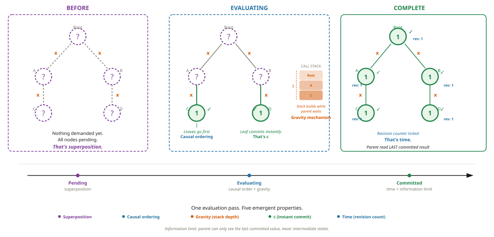
So what just happened? The engine walked the graph. Leaves committed first — they had nothing to wait for. Parents waited for their children, then committed. Each node's revision counter ticked. The screen updated. That's one frame of reality.
Now let me show you what fell out of that — because it's kind of insane.
Time. See that revision counter? That's time. Not metaphorical time — actual time. Every commit is one tick. Two commits = two moments passed. No commits = no time passes. Think about it: what would it look like if time stopped? Nothing would change. No node evaluates. Nothing commits. That's literally what “time stopped” means — zero change. Time isn't a river you float on. It's the amount of change happening in your local region.
And here's the thing about engine time: the engine could take a billion years between frames for all we know. Mario doesn't notice. Hit pause, walk away, get lunch, come back — zero time passed for Mario. You only ever experience the update. Never the computation.
The speed limit. Every parent reads its children's LAST COMMITTED value — not the value they're currently computing. You're always one step behind. The current evaluation is invisible. That's the speed limit. A leaf node — nothing to recurse into — commits instantly. That rate is C. The speed of light. Everything else is slower because it has subgraph work to do first. A photon is a leaf. That's why nothing travels faster than light — you can't commit faster than a node with zero work to do.
E=mc². Look at the pseudocode again. Recursive evaluation has two legs it can't skip. The call phase walks DOWN the graph — root to leaves. That's m hops at rate C. Then the return phase walks back UP — leaves to root, delivering results. Another m hops at rate C. Down at C, up at C. m × C × C = mc². The c² isn't some magical physics constant. It's the two unavoidable legs of recursion.
Mass. A region of the graph whose topology doesn't change. Same walk, same result, every time. A rock on a table keeps committing the same value because no new inputs are arriving. Stability. When that stability breaks — enough energy to rewire the edges — the delta propagates outward. That's released energy.
And one more: lazy evaluation. If nothing demands a node's result, it stays unevaluated. It doesn't need to commit. It can sit there with multiple possible states, pending, until someone asks. That's quantum superposition — and we'll come back to it.
No physics. No special rules. Just: evaluate the graph. And we got time (revision counter), a speed limit (off-by-one), E=mc² (two-leg recursion), mass (stable topology), and lazy evaluation (nodes that nobody asked for stay unevaluated). All from one function.
A caveat before we go further: we don't know the exact operations on the edges. We're not claiming to have the specific rules that generate electrons or gravity constants. What we're showing is that the structure of recursive graph evaluation — regardless of the specific operations — produces emergent properties that map onto physics. The shape of the argument matters more than the specific numbers.
Axiom A2 states the entire engine: a single recursive function evaluates the graph. Leaves return the identity (base case). Non-leaf nodes aggregate their children's committed values via edge operations. The output of pass W(n) feeds pass W(n+1) (Axiom A5). Combined with lazy evaluation (A3) and no stored values (A4), this produces all emergent properties observed above: time (D1), causal ordering (D2), stack depth (D8), superposition (D16), and the information limit.
The Proof of Concept: Primes From Topology
Watch what happens when a node's value depends on its depth. Depth 2: leaf returns 1. Depth 3: new irreducible structure → 2 (prime). Depth 4: just recombines depth 2 → composite. Depth 5: another irreducible structure → 3 (prime).
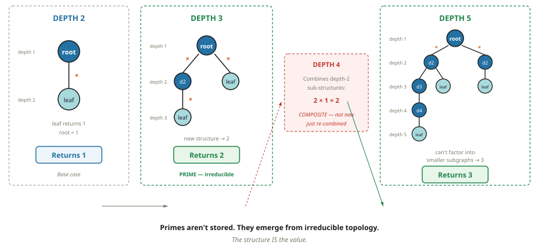
The node stores nothing. The structure IS the value. If topology generates primes, and primes generate all numbers, then topology alone generates all of arithmetic. This is the proof of concept — everything else builds on it.
One recursive function — no physics, no special rules — and we got time, a speed limit, E=mc², mass, and quantum superposition. None of these were designed in. They fell out of the evaluation. The engine walked the graph, and physics showed up uninvited.
Five properties. No physics. No special rules. Just: evaluate the graph. But here's the thing — we're not the first people to build systems like this.
Chapter 3: “Wait. This IS Spacetime.”
You Already Use This Model
We already build systems that evaluate graphs. Spreadsheets, React, CPU caches — different teams, different decades, different purposes. They all independently converged on the same model: topological ordering. If two nodes have no dependency between them, they can evaluate in any order. If one depends on the other, it must wait.
A spreadsheet is a graph. Change cell A1 and it walks the dependency graph forward, recomputing only what depends on A1, in order. B1 and C1 can update in parallel — no dependency between them. D1 waits for both.
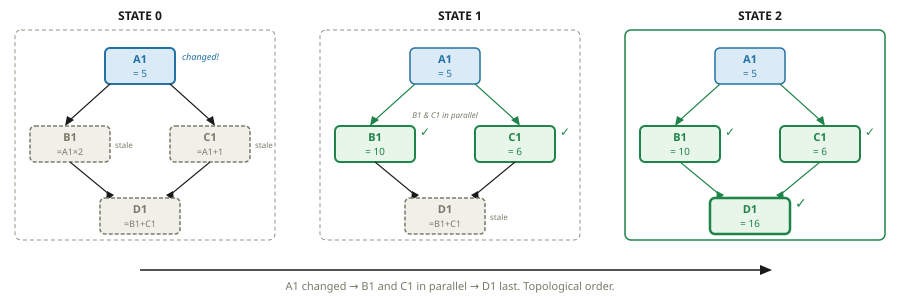
Two key consequences fall out of topological ordering. First: no preferred traversal order = no preferred frame = special relativity for free. Two observers on independent branches genuinely have no shared “now” — not because of a physical law, but because there's no ordering constraint between them.
Subgraphs Have Stacks
Now here's where it gets interesting. When the engine evaluates a deep subgraph, it builds a call stack — a list of things waiting for answers. Think of a stack of plates: you can't get to the bottom one until you take off every plate above it. Deeper subgraphs = taller call stacks = more pressure on the system.
Plot call stack depth across a region of the graph. What shape do you get?
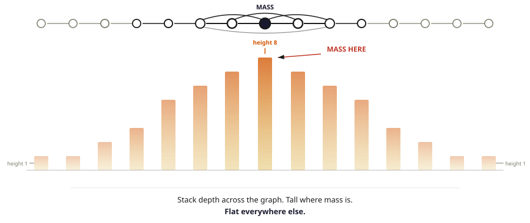
Now flip that pyramid upside down. The tall bars become deep wells. Drape a spacetime fabric grid over it.
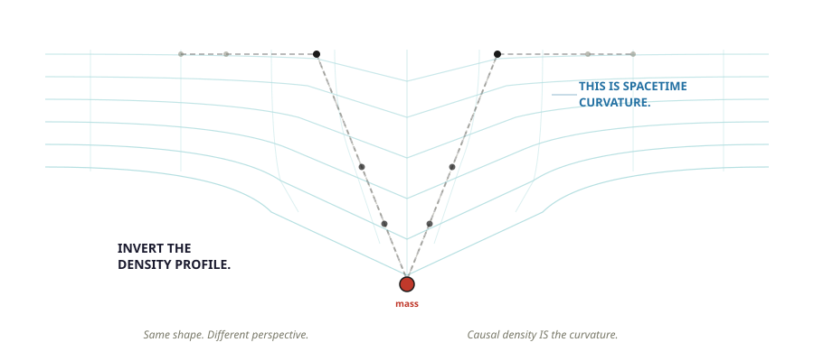
You're looking at the diagram from every physics textbook ever printed.
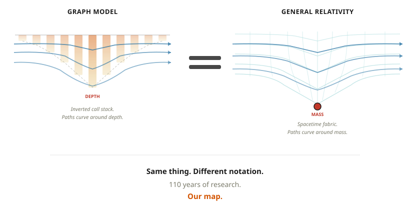
This IS spacetime.
Around here I realized something that took me embarrassingly long to see. This graph I'd been staring at — physicists already had a name for it. They call it spacetime. They've been studying it for 110 years. They call it a “fabric.” They draw diagrams of it curving. But here's the question that never gets answered: what IS the fabric? What is the thing that curves? I'm saying it's a graph. And if I'm right — or even close — then 110 years of general relativity research just became our instruction manual. Reverse engineering might be cheating in the physics world, but in my world it's a mark of the trade.
A1 (Graph Structure): Reality is a directed graph G = (N, E). Edges carry operations. A3 (Lazy Evaluation): No node evaluates until a consumer demands its result. A4 (No Stored Values): All values derived from topology alone — the structure IS the value. These three axioms, combined with recursive evaluation (A2), produce the emergent properties demonstrated in the demo.
D2 (Causal Ordering): Children evaluate before parents — the partial order imposed by the graph's dependency structure. D3 (Special Relativity): Causally independent nodes have no ordering constraint → no preferred frame → no preferred “now.” D4 (Speed of Light): A leaf node commits at maximum rate C — no subgraph to wait for. All non-leaf evaluations are slower.
The call stack of a recursive graph evaluation IS spacetime. The topology of stack depth IS spacetime curvature. Nobody ever said what spacetime IS — what the fabric is, what the thing that curves is. It's a graph. And 110 years of general relativity just became our instruction manual.
So what does GR actually tell us about our graph? It tells us this is a 3D graph. It tells us mass curves the routing table. It tells us paths follow cheapest routes. It tells us the speed of information has a hard cap. We didn't invent any of this — we're using 110 years of research as a map. But we ARE adding a few rules of our own: lazy evaluation, topology-as-value, and no stored state. Let's see where the map takes us.
Part 2: General Relativity, Translated
Mass & Energy
A massive object is a region of the graph whose topology is stable — edges don't change, same walk produces the same result every time. That's mass. A rock on a table IS part of the evaluation — but its topology hasn't changed, so it commits the same result every time. No change = same committed value = that's what mass is. Topology that holds.
When that stability breaks — enough energy to rewire the edges — the evaluation produces a different result. The delta propagates outward through the graph. That outward propagation IS the released energy.
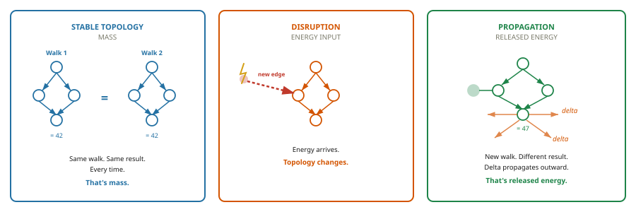
E = mc²: remember the two-leg walk from the demo? The call phase walks down — root to leaves. That's m hops at rate C. The return phase walks back up — leaves to root, delivering results. Another m hops at rate C. You can't have one without the other — you go down to get the answer, you come back up to deliver it. m × C × C = mc². The c² isn't magic — it's the two unavoidable phases of recursion.
Antimatter is a mirror graph; when it meets its original, they cancel completely, and the full evaluation propagates outward as energy.

D5 (Mass): A stable subgraph topology — same walk, same result. Topological persistence. D6 (Energy): The delta that propagates when stable topology is disrupted. D7 (E=mc²): The bidirectional walk — call phase descends m hops at rate C, return phase ascends m hops at rate C. Total: m × C² = mc². The c² factor is the two unavoidable phases of recursion. D23 (Antimatter): Mirror (conjugate) graph topology. Contact with original = complete cancellation → full energy release.
Gravity
Gravity is weird. A suspicious kind of weird. Three clues:
1. You can shield every other force — EM, strong, weak. Nobody has ever shielded gravity.
2. Einstein's equivalence principle: no experiment can distinguish gravity from acceleration. Why would a “force” be indistinguishable from acceleration?
3. Physicists hunted the graviton for decades. Never found one. Maybe gravity isn't a force at all.
You already saw it — the call stack pyramid, the inversion, the spacetime curvature. Now let's look at what the routing pressure actually does.
The deep call stack doesn't just slow things down — the system actively routes around it. Paths through mass are expensive. Paths around it are cheaper. Everything follows the cheapest path. The cheapest path curves. That curve IS gravity.
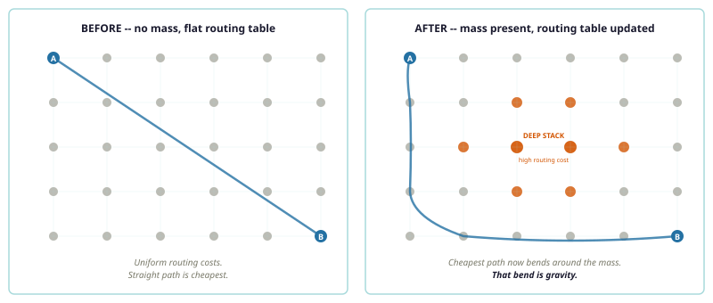
Now dissolve the three mysteries:
Why you can't shield gravity. Every other force transmits via a signal through edges — photons carry EM, gluons carry the strong force. Block the edge, block the signal. But gravity isn't a signal. It's the call stack depth of your own evaluation. Your shield shares the same stack. There is no layer in your reality that can reach into the engine and change stack depth. You are Mario. You cannot reach into the console.
Why gravity equals acceleration. Both add depth to your local call stack. Same effect. Same mechanism. That's why Einstein couldn't tell them apart — they're the same thing.
Why there's no graviton. “What particle carries gravity?” is like asking “What particle carries network congestion?” It's a system property. Not a thing that travels.
A black hole is a subgraph so deep that evaluation never completes. The call stack builds without unwinding. Unlike General Relativity's prediction of a singularity — infinite density — there's nothing infinite here. The subgraph is finite. The stack is deep but finite. The computation just never finishes. Stack exhaustion, not mathematical breakdown.
Pure cycles in the graph — nodes that depend on themselves. When the engine tries to evaluate a cycle, it detects “already visiting this node” and returns PENDING. The cycle can't resolve. But the call stack was already built on the way in. Stack depth is real. Routing pressure is real. So the cycle gravitates — it has mass from the stack depth — but no value ever commits. No signal leaves. No electromagnetic interaction. No committed state to collide with. Collisionless, invisible, extends further than stable matter. All observed dark matter properties from one mechanism: cycles that gravitate but never resolve.
D8 (Call Stack Depth): Evaluating a deep subgraph builds a call stack — each parent waits for its children. Stack depth = subgraph depth. D9 (Gravity): Deep stacks make paths expensive → system routes around → cheapest paths curve. That curve is gravity. D10 (Spacetime Curvature): Inverted call stack profile = spacetime curvature. D11 (Can’t Shield): Gravity is stack depth, not a signal through edges — no edge to block. D12 (Equivalence Principle): Gravity and acceleration both add stack depth. Same mechanism.
Gravity is not a force. It is call stack pressure created by a deep subgraph. Plot the stack depth: a pyramid. Flip it: Einstein's spacetime curvature. The routing table updates, paths curve toward mass. You can't block it because the stack is part of your own evaluation. There is no signal to block. The topology is not optional.
Time, Space & the Speed of Light
We already know time is the revision counter and C is the leaf commit rate. Now watch what happens near mass — and what happens to the graph as a whole.
Space isn't a box things happen inside. It's the graph's shape — the large-scale pattern of connections. Distance is hop count. The minimum distance is one hop — one node. That's the Planck length: one pixel.
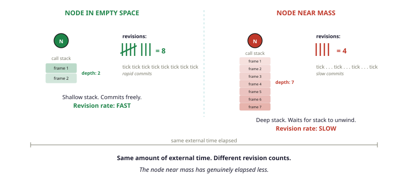
Near mass, the call stack is deeper, commits are slower, less change happens. That IS time dilation. GPS satellites orbit where the stack depth is lower — less mass nearby, shallower call stacks, faster commits, faster clocks. The difference is about 45 microseconds per day. Without correction, GPS would drift roughly 10 kilometres per day. Your phone depends on this being real.
The arrow of time: remember Fibonacci? 1, 1, 2, 3, 5, 8, 13… Each number needs the previous two. The engine works the same way. Each walk's committed results become the input to the next walk. Walk 5 needs Walk 4's output. The dependency runs one direction.
That dependency chain IS the arrow. The equations work backwards because they describe the committed results — the photographs. A photograph has no arrow. You can run a film forward or backward. The arrow lives in the computation that produced the frames. Not in the output. In the engine.
Moving fast eats commits too — position edges being rewired costs evaluation steps, leaving fewer for internal state changes. At C, zero internal revisions. Zero elapsed time. That's why a photon experiences no time.
Cosmic ray muons should decay 660m above Earth. They reach the ground. At 99.5% of C, almost all evaluation steps go to motion. Their revision counter barely moves. Confirmed experimentally.
Why is the universe expanding? Think of your family tree. It can grow — two people create a new person. You never ask “what is my family tree expanding into?” — growth is just a valid operation on a graph. Same here. The engine evaluates the graph. Some evaluations produce new nodes and edges. More graph = more evaluations = more new nodes. Growth proportional to size = accelerating expansion. No dark energy needed — the graph computes itself into existence.
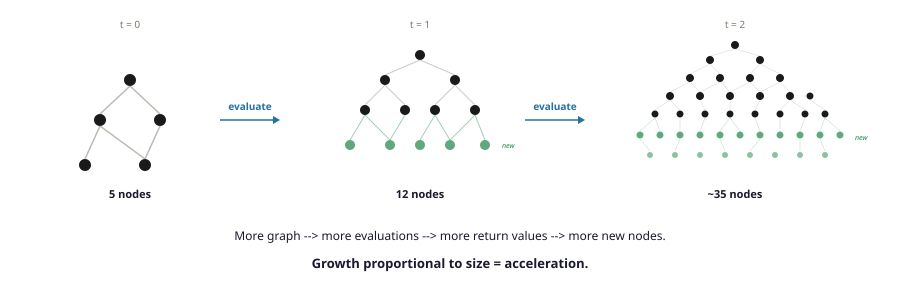
D1 (Time): Change. Each commit = one tick. No change = no time. D13 (Gravitational Time Dilation): Near mass → deeper stack → slower commits → fewer ticks. D14 (Velocity Time Dilation): Fast motion consumes evaluation steps → fewer internal revisions. At C, zero elapsed time. D15 (Arrow of Time): Each pass’s output feeds the next. Dependency chain runs one direction. Cannot un-commit. D24 (Space): Large-scale graph connectivity. Distance = hop count. Planck length = 1 hop = 1 node. D25 (Expansion): Evaluations add nodes. Growth proportional to size = accelerating expansion.
Space is the graph's shape. Distance is hop count. Time is change — near mass, deeper stacks mean slower commits and less elapsed time. The arrow points one direction because each walk feeds the next. And the universe expands because evaluation grows the graph — like a family tree, it doesn't expand “into” anything. It just grows.
General relativity mapped. Every prediction checks out. But Einstein only described the large-scale structure. What about the small-scale weirdness?
Part 3: Quantum Mechanics, Translated
Superposition & Collapse
Remember the demo — if nothing demands a node's result, it stays unevaluated. Being “somewhere” means having committed position edges to specific neighbors. Not having a definite position — pending edges to multiple neighbors — is superposition. A particle in flight with no strict consumer — anything that demands a definite answer right now, like a detector, a screen, your eyeball — stays pending. Both paths through both slits: pending. Neither committed.

Quantum mechanics is just lazy loading. Think about that. The weirdest part of quantum mechanics — particles being in two places at once, interfering with themselves — is just “nobody asked yet.” The graph hasn't been forced to commit. Both paths are genuinely alive in the dependency chain. Small, isolated things: no consumers, pending paths survive, interference. Large things: consumers everywhere, everything commits instantly.
Double-Slit & Quantum Eraser
Double-slit: fire particles one at a time at two slits. An interference pattern appears — as if each particle went through both. Add a detector at one slit: pattern vanishes. Looking at it changed the result.
Quantum eraser: run the experiment WITH a detector. After the particle hits the screen and its dot is already recorded, erase the detector's which-path info. Sort the results. The interference pattern comes BACK. The dot is already on the screen. How can erasing information after the fact change a result that's already been recorded?
The double-slit in four steps: (1) No consumer — both paths pending. (2) Engine evaluates all pending paths without committing. (3) Pending paths overlap at the screen — bright bands where they align, dark where they cancel. (4) Screen's 1026 atoms force commitment — one dot. Over thousands of particles: the interference bands fill in.
A detector ruins it because it demands “which slit?” — forces one path to commit. Only one path to the screen. No overlap. No pattern.
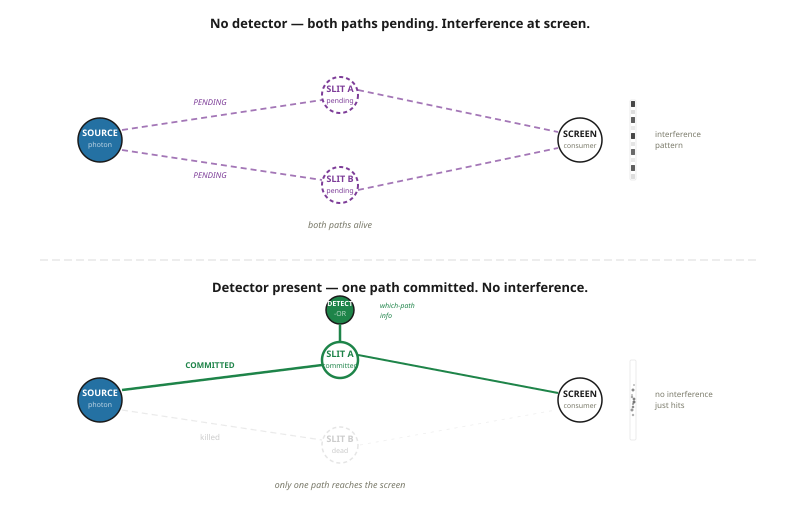
Why the Quantum Eraser Isn't Time Travel
The eraser is upstream in the dependency chain. When the screen demands the particle's position, that demand cascades backwards through the dependency graph. The eraser node sits in that path. The cascade reads whatever state the eraser is in at the moment the pull arrives.
Eraser OFF: the cascade hits “which-path erased.” Both paths still pending. Interference emerges.
Eraser ON: the cascade hits “which-path recorded.” One path commits. Interference destroyed.
There is no “after the fact.” The path evaluation was still in flight through the dependency chain. The eraser's state at the time of the pull determines the outcome. No time travel. No retrocausality. No spooky anything. Just a dependency graph where the eraser sits upstream. It's the same thing as editing a spreadsheet cell before the formula recalculates — the formula doesn't care when you edited, it cares what the value is at cascade-time.
Why basketballs don't do this: 1026 atoms, every one a strict consumer demanding definite inputs. No pending evaluations survive. That's decoherence.
D16 (Superposition): No strict consumer → node stays unevaluated → pending edges to multiple states. D17 (Collapse): Consumer demands result → one path commits → definite outcome. D18 (Decoherence): ~1026 atoms each acting as strict consumers → no pending evaluations survive in warm/dense environments. D19 (Double-Slit): No consumer at slits → both paths pending → interference at screen. D20 (Quantum Eraser): Eraser is upstream in dependency chain. Its state at cascade-time determines outcome. No retrocausality — evaluation was in flight.
The prime demo uses trees (no cycles). Values stay real. Everything is deterministic. That's the baseline.
Now add a cycle to the graph — a node that depends on itself. Topological ordering breaks. You can't evaluate it top-down because the node needs its own result before it can produce one.
Self-consistency forces a constraint: the value must equal the result of its own operation applied to itself. For many operations, the only solutions are roots of unity — complex numbers that return to 1 when raised to some power. Complex numbers don't get bolted on as a special rule. They emerge because cycles demand self-consistent solutions, and self-consistent solutions in a multiplicative graph are roots of unity.
Once you have complex values, paths through the graph carry complex amplitudes. Multiple paths to the same node accumulate — some reinforce, some cancel. That's interference. Not mysterious wave behavior. Bookkeeping on a graph with cycles.
The bidirectional walk (down to leaves, back up to root) means the final result involves α times its conjugate: α × α* = |α|². Probability from structure.
Caveat: This is exploratory. We haven't derived the Born rule from first principles. But it's interesting that cycles in a graph — which must exist in any non-trivial universe (feedback, self-reference, closed causal loops) — naturally produce exactly the mathematical structure quantum mechanics uses: complex amplitudes, interference, and squared-modulus probability.
Quantum mechanics is lazy evaluation. Small, isolated things: no consumers, pending paths survive, interference. Large things: consumers everywhere, everything commits instantly. The quantum eraser isn't time travel — the eraser is upstream in the dependency chain. Its state at the moment of the cascade determines the outcome. Not backward in time — upstream in the dependency graph.
Entanglement
When two particles interact, their value subgraphs merge — they share a node. Position can change — they can move to opposite ends of the universe. But the shared node doesn't care about position. When either particle is evaluated, the shared node commits. Both read the same result. No signal travels — the correlation was in the topology all along.
Why not faster-than-light communication? The results are correlated but random. Neither observer learns anything useful until they compare notes at C. It's like two people opening envelopes from a pre-shuffled deck — the results are correlated by the deck, but neither person's opening tells the other anything until they call each other.
Honest Gaps
A framework that claims to explain everything without identifying where it breaks is a story, not a theory. These gaps are real and hard.
These are genuine obstacles. Any one of them could be fatal to the whole picture. That's fine. That's how this works. You lay out what you think, you lay out where it breaks, and you hope someone smarter can get further than you did.
Quick Reference
| Physics Concept | In This Framework | Computer Analogy |
|---|---|---|
| Space | Large-scale graph shape. Connectivity pattern. | Network topology. Hop count = distance. |
| Mass | Stable subgraph topology. Same walk, same result. | Deterministic function, same output for unchanged input. |
| Energy | Return value that propagates outward when topology changes. | Function output feeding next function call. |
| E = mc² | Bidirectional walk: m hops down at C, m hops up at C. mc². | Recursive call cost: down m levels × up m levels at same rate. |
| Time | Change. Each commit is one tick of local time. No change = no time. | State change counter. No state change = no tick. |
| Arrow of time | Each walk's output feeds the next. Fibonacci dependency. Cannot un-commit. | Program execution order. Can't un-run code. |
| Time dilation | Deep stack or fast motion → slower commits → revision counter ticks less. | Deep recursion or I/O consuming cycles → lower throughput. |
| Speed of light (C) | Commit rate of a leaf node. No subgraph. Maximum rate. | Base case return time. Immediate, no recursion. |
| Gravity | Deep call stack creating routing pressure. Paths curve. | Deep recursive call; OS routes work around it. |
| Can't shield gravity | Stack is part of your own evaluation. Not a signal — a topology. | Can't avoid being on the same call stack. |
| Equivalence principle | Acceleration and gravity both add call stack depth. Same mechanism. | CPU load from motion vs. deep calls: same throughput impact. |
| Spacetime | The routing table — edge weights, cheapest paths. Updated by stack pressure. | Network routing table, updated on congestion. |
| Black hole | Subgraph so deep the stack never unwinds. No singularity — stack exhaustion. | Non-terminating recursion. Finite code, infinite loop. |
| Dark matter | Graph cycles that build stacks but never commit. Gravitates, never interacts. | Infinite loop — CPU busy (stack depth) but no output (no signal). |
| Wave function | Pending evaluation. Multiple possible states, nothing committed. | Lazy thunk. Defined, not forced. |
| Collapse | Strict consumer demands a result. Pending evaluation commits. | Forcing a lazy thunk. |
| Quantum eraser | Eraser is upstream in dependency chain. Pull cascades through its state. | Editing spreadsheet formula before Enter. |
| Entanglement | Shared value subgraph node. Co-resolves when either is evaluated. | Shared pointer. Same data regardless of location. |
| Special relativity | No preferred traversal order → no preferred frame. | Same output regardless of evaluation order. |
| Expansion | Evaluations add new nodes. Growth proportional to size = acceleration. | Self-modifying code. Evaluation extends codebase. |
| Planck length | One hop. One node. One pixel. | Minimum addressable unit. |